Konference krizového řízení
a řešení krizových situací
17. a 18. září 2026
CrisCon není jen konference. Je to místo, kde se potkávají lidé, kteří řeší krizové situace v reálném světě, a ti, kteří hledají způsoby, jak jim předcházet.
Dva dny plné
know-how a praxe
CrisCon propojuje témata krizového řízení, bezpečnosti, zdravotnictví, logistiky, resilience a moderních technologií do programu, který nabízí inspiraci, sdílení zkušeností i konkrétní příklady z reálného světa.
1. den
prof. Ing. Michaela Bartoňová, Ph.D.
nemocniční krizová připravenost
a provoz zdravotnické infrastruktury.
prof. Ing. Michaela Bartoňová, Ph.D.
nemocniční krizová připravenost
a provoz zdravotnické infrastruktury.
prof. Ing. Michaela Bartoňová, Ph.D.
nemocniční krizová připravenost
a provoz zdravotnické infrastruktury.
prof. Ing. Michaela Bartoňová, Ph.D.
nemocniční krizová připravenost
a provoz zdravotnické infrastruktury.
2. den
prof. Ing. Michaela Bartoňová, Ph.D.
nemocniční krizová připravenost
a provoz zdravotnické infrastruktury.
prof. Ing. Michaela Bartoňová, Ph.D.
nemocniční krizová připravenost
a provoz zdravotnické infrastruktury.
prof. Ing. Michaela Bartoňová, Ph.D.
nemocniční krizová připravenost
a provoz zdravotnické infrastruktury.
prof. Ing. Michaela Bartoňová, Ph.D.
nemocniční krizová připravenost
a provoz zdravotnické infrastruktury.
O konferenci
CrisCon propojuje praxi, akademii i výzkum
Na jednom místě se setkávají experti na bezpečnost, záchranáři, krizoví manažeři i výzkumníci. CrisCon je platforma pro lidi, kteří chtějí být připraveni lépe reagovat na současné hrozby a společně hledat funkční řešení.
Během dvou intenzivních dnů
- inspirativní přednášky od odborníků z praxe
- skutečné příběhy krizí a jejich řešení
- otevřené diskuze o aktuálních hrozbách
- prostor pro nové kontakty a spolupráci
Nejaktuálnější výzvy dnešní doby
- krizové řízení a ochrana obyvatelstva
- analýza a řízení rizik
- kritická infrastruktura a kybernetická bezpečnost
- environmentální, technologické a zdravotnické hrozby
- digitalizace a budoucnost bezpečnosti
Každý ročník reaguje na to, co se právě děje ve světě, a přináší témata, která jsou pro připravenost institucí i jednotlivců opravdu podstatná.
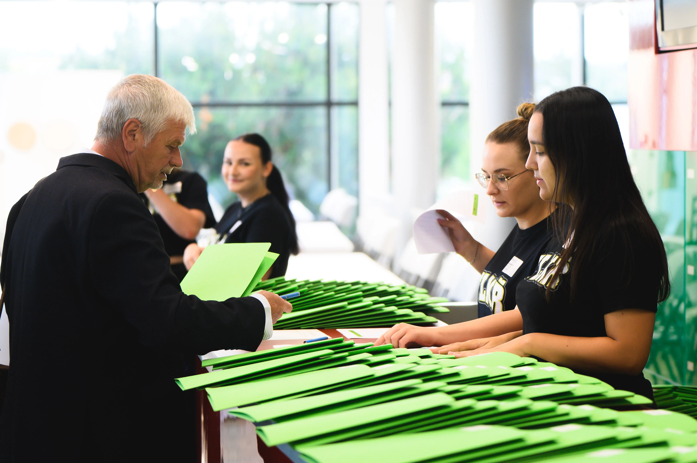
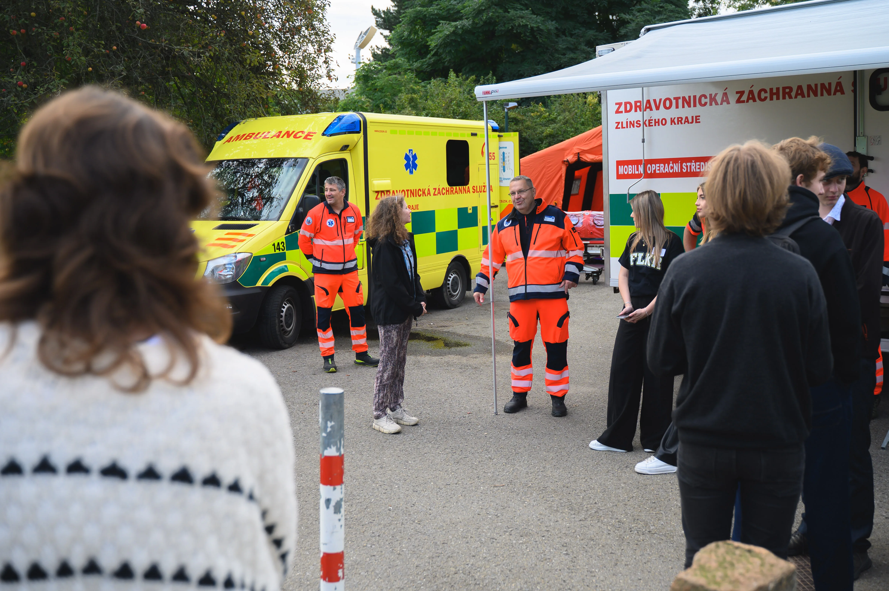
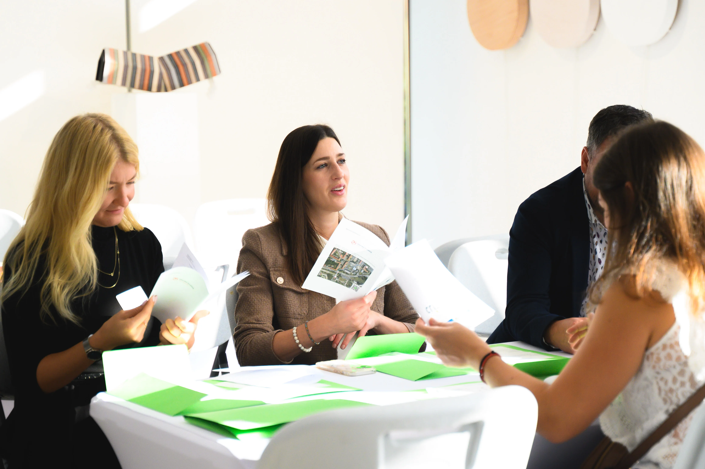
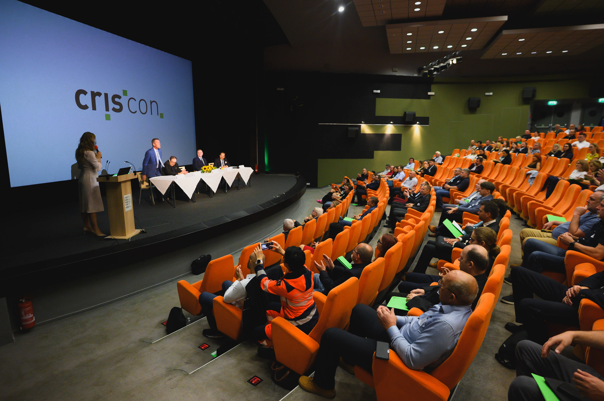
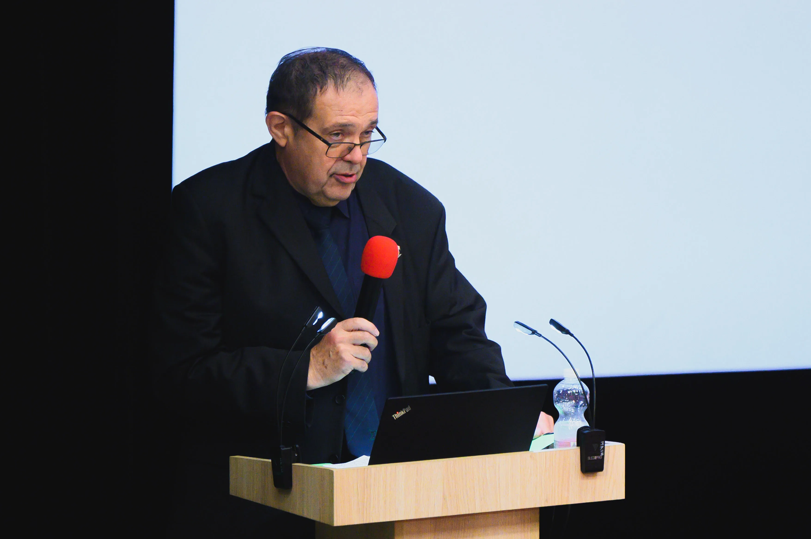
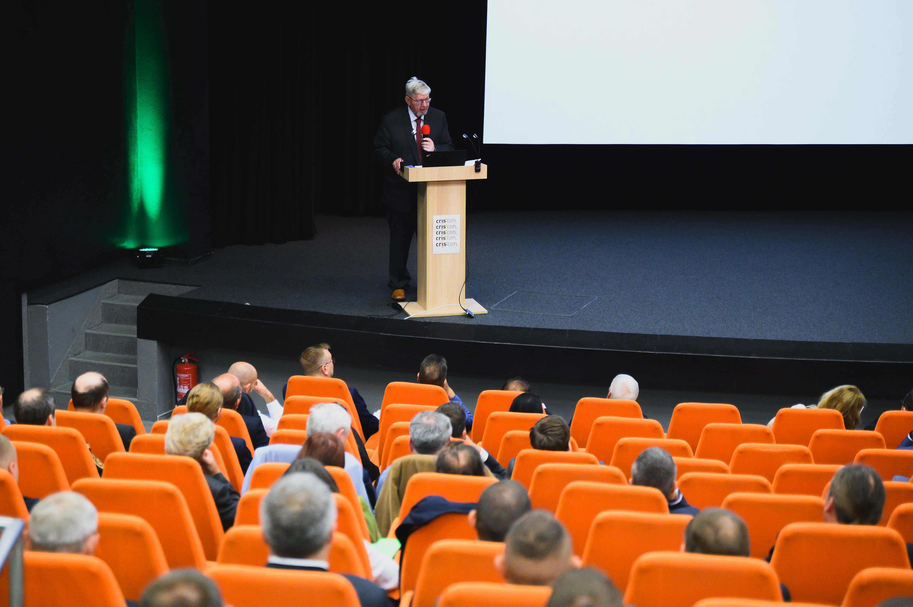
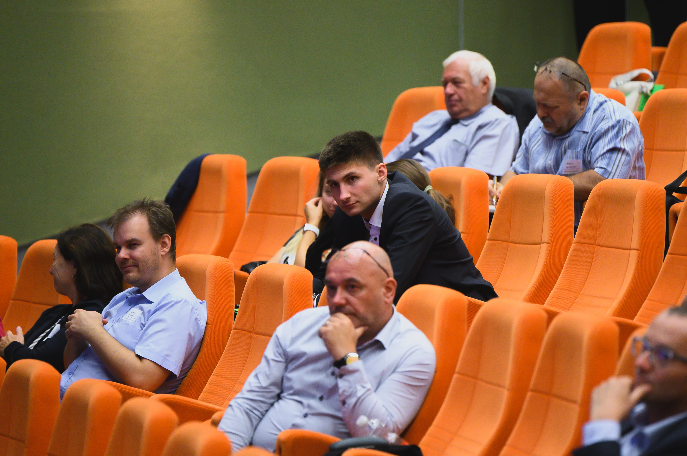
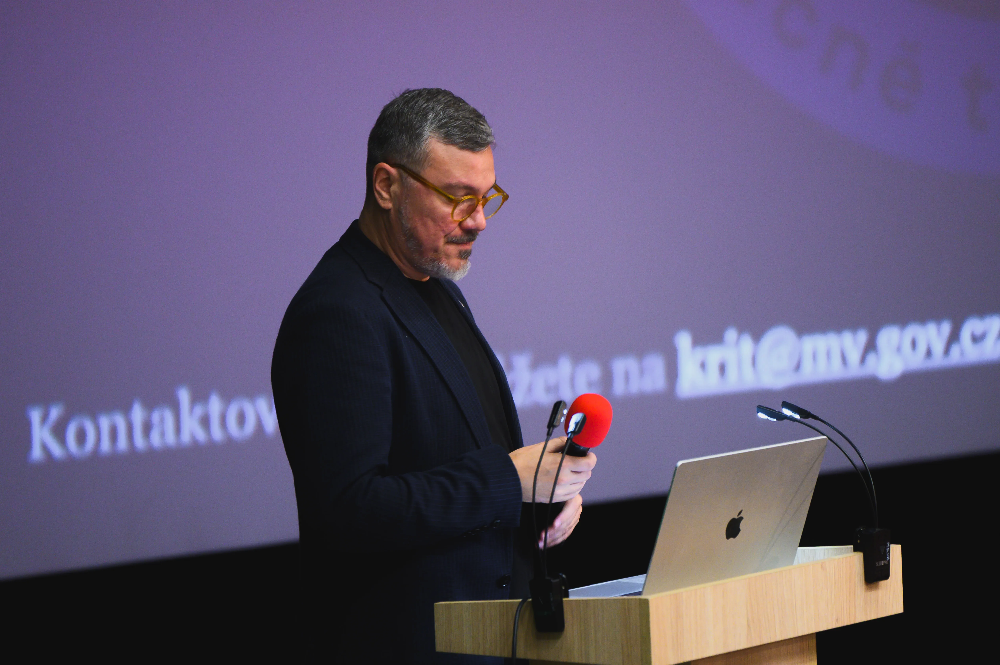
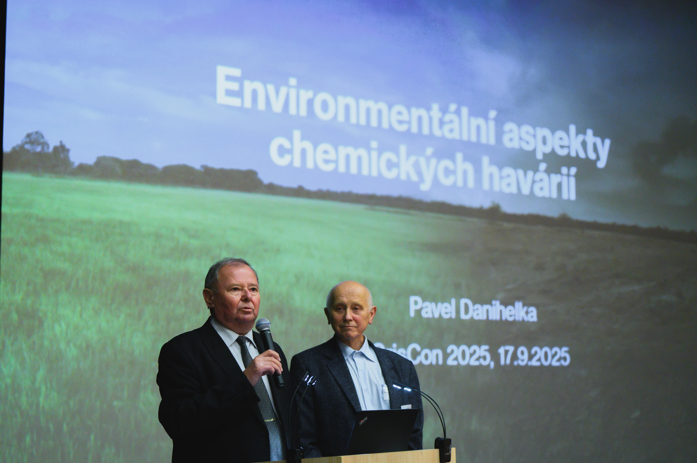
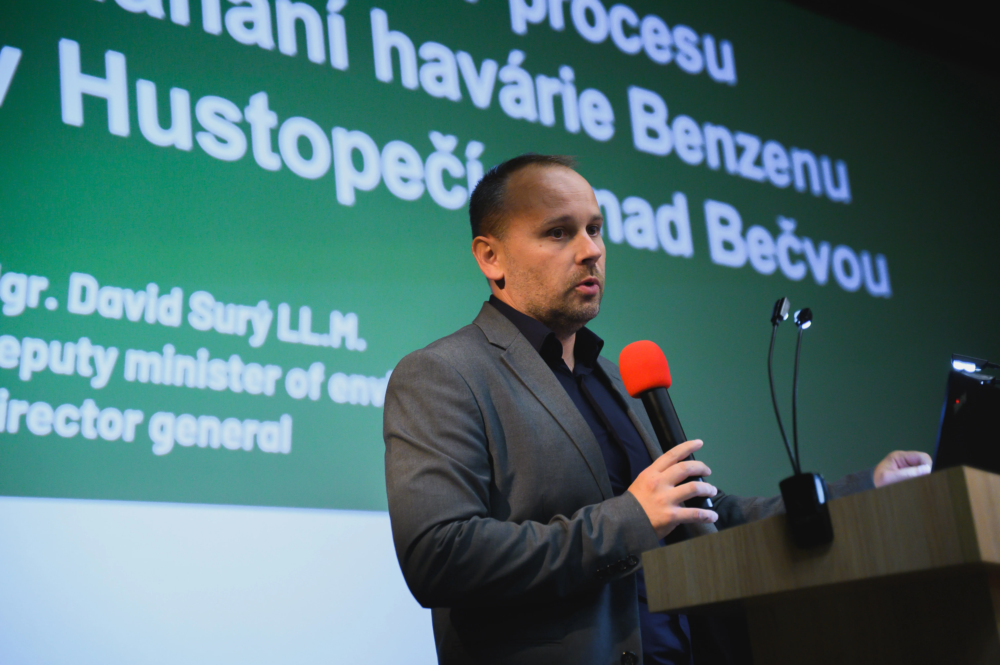
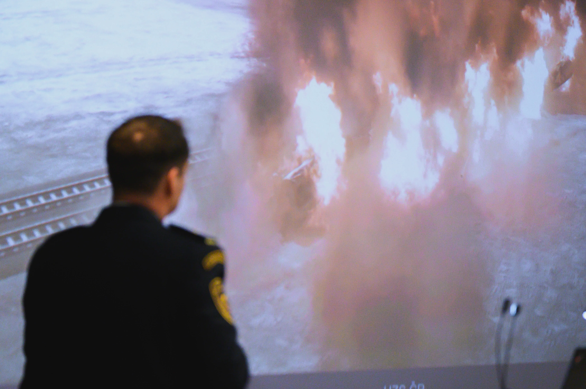
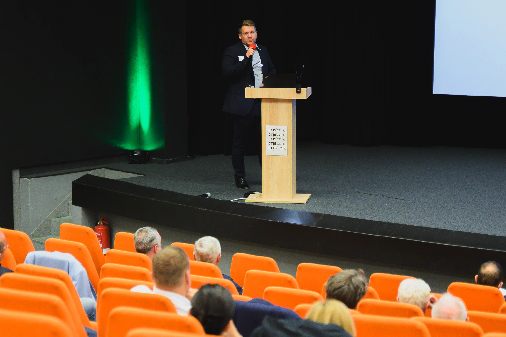
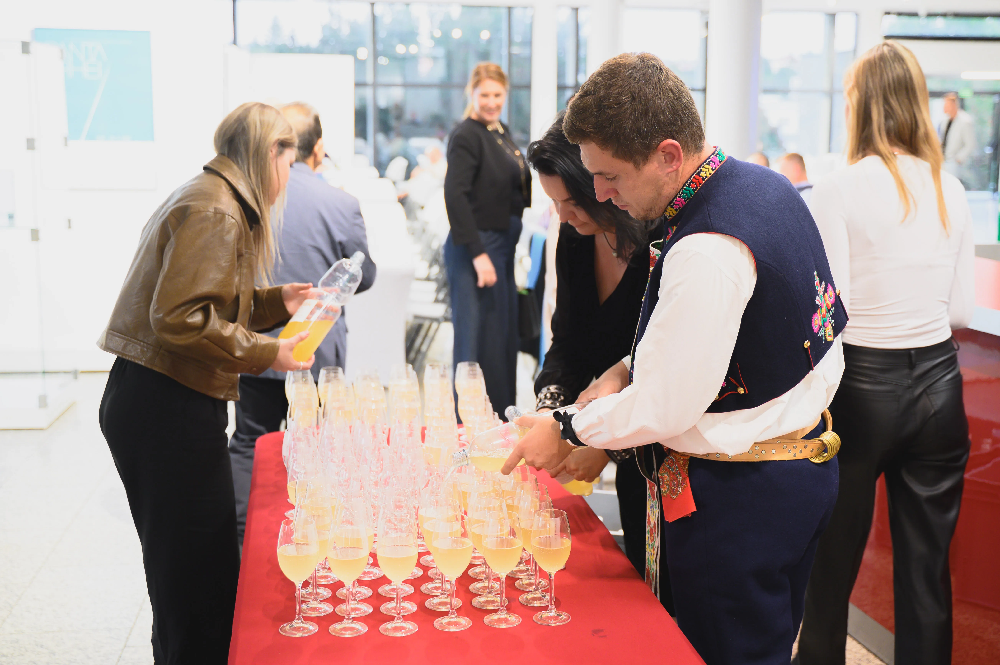
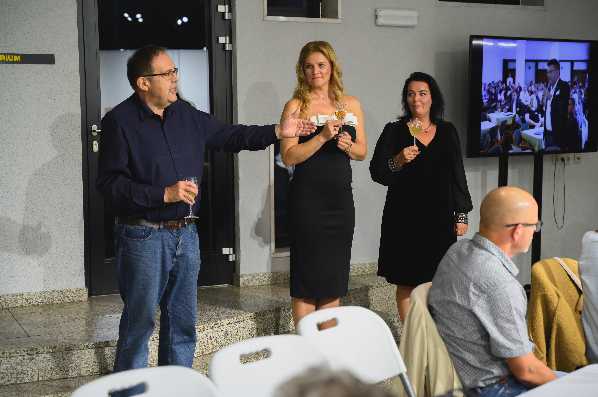
Připraveni
na cokoliv?
Protože krize si nevybírají. A připravenost není náhoda. CrisCon je místo pro ty, kteří chtějí být o krok napřed.
Vaše vstupenka
CrisCon 2026CrisCon spojuje odborníky z praxe, akademické sféry i výzkumu, kteří chtějí být o krok napřed. Počet míst je omezený, zajistěte si své včas.
Jméno
E-mail
Organizace
Kdy
17.–18. září 2026
Kde
Zlín, Kongresové centrum
Cena
Vstup zdarma
Kompletní harmonogram
09:50–10:20
Úvodní keynote: Odolnost společnosti v době řetězených krizí
prof. Ing. Michaela Bartoňová, Ph.D.
10:20–10:50
Kritická infrastruktura zdravotnictví pod tlakem
MUDr. Lucie Navrátilová, MBA
10:50–11:20
Krizová komunikace státu, samospráv a IZS
Mgr. et Mgr. Jan Sedlář
11:40–12:10
Bezpečnost logistických procesů při výpadku klíčových uzlů
Ing. Tomáš Veverka
12:10–12:40
Kybernetický incident jako spouštěč provozní krize
Ing. Petra Holubová, Ph.D.
14:00–14:30
Koordinace složek při zásahu s velkým počtem zasažených
plk. Mgr. David Konečný
14:30–15:00
Jednotná třídící karta a triage v praxi
Bc. Kateřina Fialová, DiS.
15:40–16:10
Digitalizace krizového řízení: od dat ke správnému rozhodnutí
Ing. Radek Jelínek
16:10–16:40
Business continuity při energetických výpadcích
Ing. Marek Hlavsa, MBA
16:40–17:10
Školy pod tlakem: bezpečnostní incidenty a prevence
Mgr. Alena Kubíčková
09:00–09:30
Environmentální hrozby a odolnost území v podmínkách ČR
RNDr. Veronika Šimečková, Ph.D.
09:30–10:00
Ochrana obyvatelstva při kombinovaných rizicích
pplk. Bc. Ondřej Marek
10:00–10:30
CBRN hrozby a připravenost institucí
11:00–11:30
Riziková analýza jako nástroj pro rozhodování vedení
11:30–12:00
Kyberbezpečnost veřejných institucí
12:00–12:30
Praktické lessons learned z mimořádných událostí
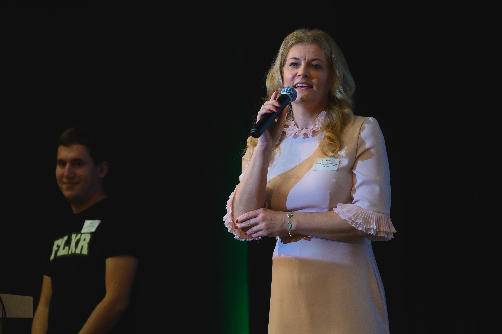